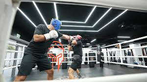

About Sam:
Outside of work, I try to be as active as possible. Living in Colorado, I enjoy the wealth of outdoor activities the state has to offer. Dive deeper into some of my passions below:
Boxing
For as long as I can remember, I have been a boxing fan, but never really ever tried to participate in the sport. Since moving to Colorado, I have found an incredible gym, with a very knowledgeable trainer, named Pedro Baca. It has been a great experience to learn boxing as an adult, as I have not felt the pressures I once felt when I was younger to succeed at a rapid pace. The gym I have joined has been incredible for beginners, to advanced levels, and I feel as if I have slowly built brick-by-brick to feel confident in my ability to defend myself, as well as spar with experienced boxers. It is an excellent cardio workout, and I'd recommend it to anyone, I have personally lost over 10lbs since starting last year, and I feel great after a workout at the gym!
Snowboarding
I have been an avid snowboarder for my entire life. I was fortunate that althought I grew up on the east coast of the United States, I had grandparents who lived in Vermont, which afforded plenty of opportunities to snowboard. Snowboarding has been a real bonding activity for my father and I, which culminated in a truly epic trip to Revelstoke in British Columbia for a 5 day heli-ski trip.
Now, as a Colorado resident, I am able to go to some of the best mountains in the nation for day trips. My girlfriend grew up in Florida, so I have immensely enjoyed helping to teach her the ropes of winter sports, and it has become yet another great outdoor activity in Colorado that we can do together.
Real Madrid
I am extremely fortunate to be a Real Madrid fan, as they have provided me with more joy, as well as heart problems than any other team. When I was 16, my family was on a trip to Spain, and I was incredibly lucky to be able to attend a Real Madrid game with my dad live. At the time, I was a soccer fan, but just beginning to know the sport, and I had no team that I supported.
After that game, I was hooked. The atomosphere of the Santiago Bernabeu, which is Real Madrid's home stadium, was unmatched to anything I had encountered in American sports before. Since that day, I have been following Real Madrid religiously, and rarely miss a game. As you may have seen on the homepage of this website, one of the mantras of Real Madrid, Soy Lucha, Soy Belleza, or in English, I am Fight I am Beauty has really resonated with me as a mantra for life to be resilient, but also sensitive.